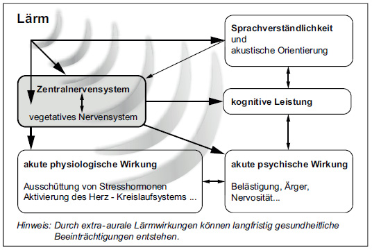

(1) Hinsichtlich der Gesundheitsgefährdung durch Lärm wird zwischen auralen (auf das Gehör bezogenen) und extra-auralen Lärmwirkungen unterschieden.
(2) Ab einem A-bewerteten äquivalenten Dauerschallpegel von 70 dB(A) kann als aurale Lärmwirkung eine reversible Hörminderung (Vertäubung) auftreten.
(3) Extra-aurale Lärmwirkungen zeigen sich unter anderem in verschiedenen physiologischen und psychischen Reaktionen, die über das zentrale und das vegetative Nervensystem des Menschen vermittelt werden. Diese Wirkungen entsprechen einer Stressreaktion. Sie haben keinen strengen Pegelbezug, entstehen in unmittelbarem zeitlichem Zusammenhang zur Schallexposition und klingen nach der Exposition schnell wieder ab (akute Wirkung). Andauernde Stressreaktionen können negative gesundheitliche Auswirkungen haben (chronische Wirkung).
(4) Extra-aurale Lärmwirkungen können je nach betrieblicher Situation und Arbeitsaufgabe folgende Bereiche betreffen (siehe Abbildung 1):

Abb. 1: Vereinfachte Darstellung akuter extra-auraler Lärmwirkungen
(5) Unfälle und arbeitsbedingte Gesundheitsgefährdungen können entstehen, wenn Fehlentscheidungen oder -leistungen zu einer Gefährdung des Beschäftigten oder anderer Personen führen. Lärm kann z. B.:
Weitere Erläuterungen enthält der Anhang 1.